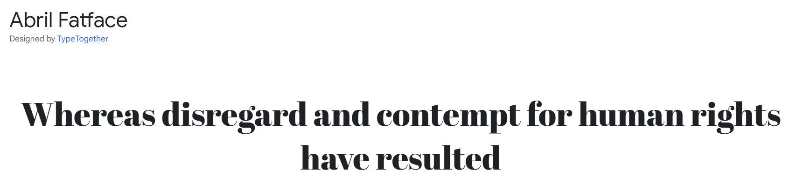
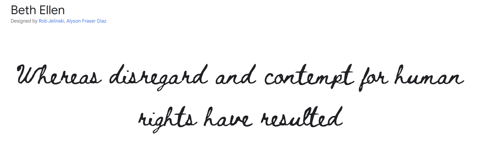
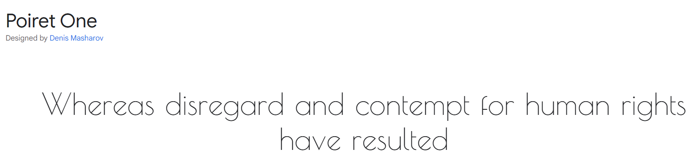
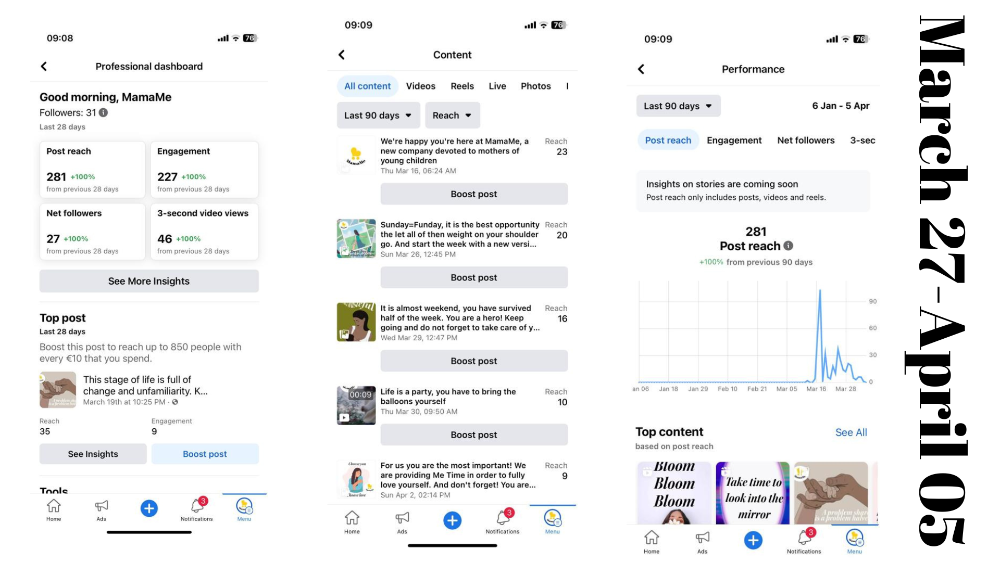
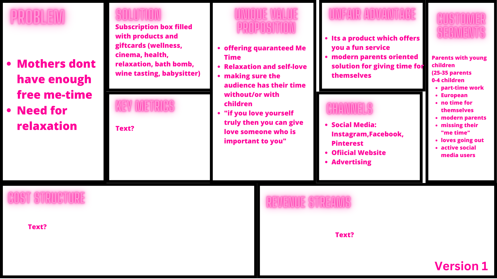
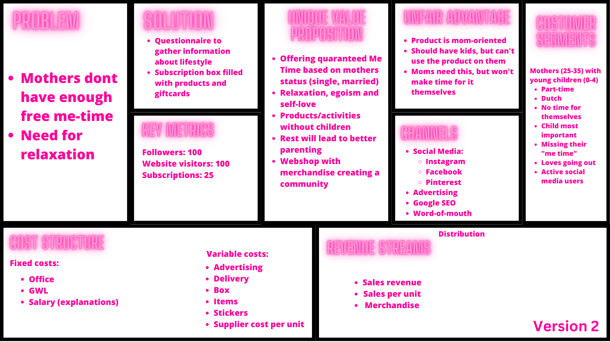
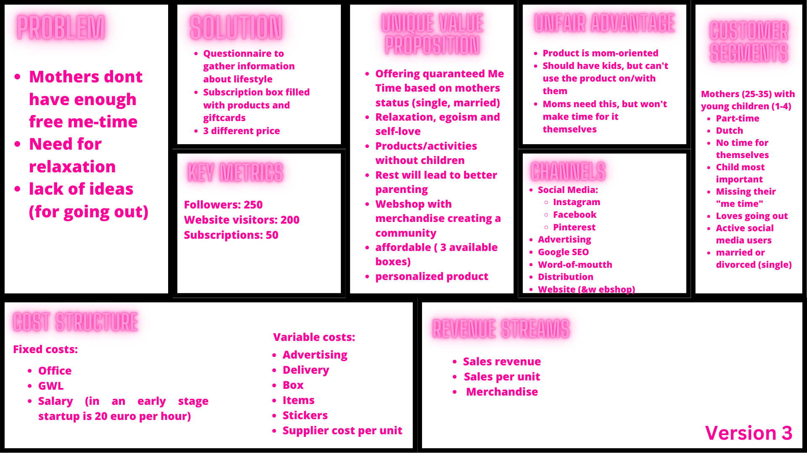

Justifications
This branded website is publicly available at www.buasmamame.nl
This website was created by:
- Zoë Hussaarts (212884)
- Valeski Boor (213785)
- Flora Andruskó (204403)
- Anna Sasadi (204401)
Content
| # | Student ID | Value | Name and link of content |
|---|---|---|---|
| 1. | 212884 | Value | You and I, Webshop |
| 2. | 213785 | ? | Justifications |
| 3. | 204403 | ? | Socials |
| 4. | 204401 | ? | Vision and Values |
Production
Design Elements
-
MamaMe colour scheme:
-
#D5687F Pink uniquely represents love of self next to being a feminine color. A core value of our brand is self-love targeting mothers only, making pink an important suiting color. This shade by itself is soft and warm, and therefore sympathizing and comforting.
-
#FFD014 Yellow signifies happines but at the same time also egoism. These two mindsets go hand in hand within our brand. As the most prodominant color in our logo, it's brightness captures the attention and calls to action.
-
#7A7B01 Green is the color of nature. It represents balance and symbolizes self-respect and growth. Growing towards a balance that includes self-respect is what MamaMe values. This color acts as a intermediate between lighter and darker colors used within our brand.
-
#110D0D Black signifies strength, boldness and is highly readable. This aligns with a egoistic mindset, a mother needs to be strong and bold in order to prioritize herself for a change.
- Font choices:
- Headings
- Sub-headings
- Paragraphs
The bold character of this font catches the readers eye, and immediately gives the impression of our core value egoism by taking up space. April Fatface still contains a lot of detail in the curves and alternation between thick nd thin lines, making it a more feminine. In targetting mothers of young children about their selfcare it is important to be perceived as pleasant while still looking professional, which is achieved with this elegant font.The Beth Ellen font is a feminine handwritten font created with the intension of encouraging someone to be their best self and spread love. By using this font as a subtext we can give our brand a human feel, as cursive handwritten texts easily evoke emotion and feel comfortable. The playfulness also relates back to young children. Beth Ellen represents the value of self-love within our brand.Poiret One is the perfect font to use for paragraphs as it is sleek and can easily be read even with a lot of text, due to the geometric feel. Still, the elegant curves give it a feminine character which suits the two headings. When thinking about our values self-respect and learning, a simplisctic font like this best represents this. No need to make things, motherhood or the text, too complicated. - User interface patterns: The landing page features a carousel to effectively capture the user's attention. The navigation bar provides a clear and concise set of pages to ensure ease of use for the user. The "About Us" section includes a dropdown menu that conveniently groups related pages together. The inclusion of a search bar within the navigation bar further enhances the user experience. To avoid potential frustration, buttons are programmed to open in a new tab, minimizing accidental navigation away from the current page. Hovers are utilized for buttons and hyperlinks to provide visual feedback to users, indicating that there is an interactive element on the webpage. By hovering over a button or hyperlink, the user is informed that they can click on the element to access more information or perform an action. This enhances the user experience by making it more intuitive and user-friendly.
- The structure of the navigation and content (e.g. how content units are distributed across pages): Our website has been designed with a deliberate balance of text and visual content, with additional images and graphics used only where they provide value and enhance the user's understanding of the information presented. We chose this approach in order to prioritize clarity and avoid overwhelming the user with unnecessary visuals. The result is a clean and concise presentation of information that is easy to navigate and understand. The website commences with a detailed introduction of our brand and product offerings, followed by a section outlining the school requirements for this project. Additionally, we have integrated a webshop where users can purchase our products and support our crowdfunding efforts. The items available to buy are posted in Instagram stories. We tried to connect our socials to the website and vice versa. Furthermore, we have a dedicated crowdfunding page on GoFundMe to further facilitate donations and support from our audience.
- Other units:
- How does the logo design fit the values and personality of the brand? MamaMe is aiming at changing the mindset of mothers of young children to be more egoistic by prioritizing themselves, something that seems new and difficult in the beginning but is very important. This logo exceeds at being a bridge between the comforted lifestyle they are used to and the next step to becoming more egoistic. The heart shape with two circles underneath resembles a baby stroller, intriguing mothers of young children immediately. Besides, having circles underneath also symbolizes movement and growth. The heart itself gives the logo a comforting character. The shapes are filled in since our logo is supposed to take up space, as one does when being egoistic. The color yellow is of great importance for MamaMe since it communicates egoism, making it a perfect fit as the predominant color in the logo. Having the Brand name written underneath in black creates a high contrast, adding to being bold. With the font and curve of the text, the logo expresses its feminine character.
- How does website design fit the values and personality of the brand? Our website design was intentionally crafted to align with the feminine vibe of our target audience, who are primarily mothers. However, recognizing that moms come in diverse shapes and sizes, we incorporated bold and unisex colors such as green and yellow. The headings are also bold, complemented by a softer cursive font type, creating a visual contrast that reflects our brand's message. We firmly believe that mothers should prioritize their self-care needs above all else, even if societal expectations dictate otherwise. The use of original and engaging headings that are directly addressed to our target audience is an effective strategy to capture their attention and keep them engaged. By tailoring the text to the needs and interests of mothers, we can create a more personal and relatable experience, which can help build trust and credibility with our audience. Additionally, it can help to establish a stronger brand identity and voice that resonates with our target audience, leading to increased engagement and conversions.
- How does website design fit the marketing and communication strategy? We conduct weekly reflections on our communication strategy to ensure its effectiveness on social media. In addition, we have created a persona that accurately represents our target audience, which is available on our website. The persona includes all the necessary information about our audience, presented in a manner that aligns with our brand style.
- How does website design help showcase the unique value proposal of the product? In the "About Us" section of our website, we have provided a comprehensive description of our product and highlighted its unique features to excite and engage our audience. Although we are not mothers ourselves, we acknowledge and empathize with the challenges that they face, which helps to foster a sense of community and openness. Our messaging is written in a way that directly addresses our target audience of mothers, which helps to make them feel seen, heard, and valued.
Credits
- All Font Choices can be found on Google Fonts
- We have used Abril Fatface, Beth Ellen and Poiret One.
- All pictures used were extracted from Pixabay and Adobe Stock
Testing Report
- Website purpose:
- To convince any future investors why they should kickstart the content you developed
- Display new, immersive brand based on personality and purpose (using key building blocks such as vision and values to do so)
- Based on this we formed these research questions:
- How was your experience on the MamaMe website?
- Did you have an easy time navigate throughout the different pages in the website?
- Do you feel intrigued to know more about and/or invest in this brand?
- Was there something not clear/confusing?
- Is there any option/feature missing in your opinion?
- Along with user testing goals:
- Find out what products MamaMe has to offer our target audience
- Find out what the Vision and Mission of MamaMe is
- Find out the story of the people behind the brand
- Donate money through the MamaMe GoFundMe
- Participants:
- Latisha, 25 year old, mother, 3 month old daughter, part time job in communication, at home, on laptop. Link: https://youtu.be/zgEWP6nEinA
- Mavis, 31 year old mother, 2 and 4 year old children, part time job in factory, at home, on laptop. Link: https://youtu.be/QbY_g-quJOQ
- Jasmine, 26 year old mother, 2 year old son, at home, on laptop. Link: https://youtu.be/088qDb4n7OU
- The test’s protocol
- The website opens on the home page immediately, this is where the user testing begins. Participants were told the goals one at the time and were advised to think out loud. Hints were given if the participants reached a deadend. The testing was filmed on a mobile phone.
- An intended scenario:
- Goal 1: Participant goes to About US, in the navigation bar, from the appearing menu click on YOU AND I. In the new page underneath 'Our product:' the product offer can be read.
- OR
- Goal 2: Participant click on ABOUT US in the navigation bar, from the appearing menu click on VISION AND VALUES. In the new page, the vision and mission can be read.
- Goal 3: Participant goes to About US, in the navigation bar, from the appearing menu click on YOU AND I. Scroll down to the new page and underneath 'Our story' the story of the people behind the brand can be read.
- OR
- Goal 4: From the home page, the participants can immediately press on the 'support us' button right away, bringing them to the SUPPORT US page. There they can press the 'It only takes one click to change a life button', opening a new tab to the GoFundMe page.
- OR
- Goal 1: Participant goes to About US, in the navigation bar, from the appearing menu click on YOU AND I. In the new page underneath 'Our product:' the product offer can be read.
- After testing the website on 3 participants the major errors and successes were visible, so there was no need for further testing. Participant number 1 and 3 were very articulate about everything they saw and thought, and Participant number 2 was as a person a little less articulate as a person and has trouble reading in general, still from her actions the same problems could be derived (with the main problem having too much text). The test findings could be sorted into a positive and negative list, ordered from most important to less important. The importance is decided by the frequency of the problem and whether it is in alignment with the website's purpose according to the brief.
- Positive
- Site looks appealing (1,2,3)
- Social media can be easily accessed (1,3)
- All interested to know more about MamaMe, see the actual product, before donating ( 1,2,3)
- Good to have a search bar (1,2,3)
- Nice aesthetics/ color scheme (1,3)
- Donating is easily found (1,3)
- Negative
- Difficulty finding the product (1,2,3)
- Header navigation confusing; participants don't know on which page they are and participant 1 didn't know 'About and Us' belonged together (1,2,3)
- Search bar is currently confusing (1,2,3)
- The 2 children pages of 'About Us' are hidden (1,2,3)
- Overwhelmed by amount of text (1,2,3)
- Pictures on homepage are deceiving; looks as if it's a clothing brand (1, 3)
- 'Justifications' page with the corporate information is confusing (1,3)
- The persona was perceived as the team behind MamaMe (2, 3)
- Header:
- Highlight heading when hovering
- Highlight current page
- Product:
- Better positioning of the actual product (the subscription box), by having pictures of this product on the homepage instead of gifts we give for donations
- Mentioning the product in the navigation bar to make it more accessible
- Content:
- Lessen the text, especially 'You and I' page
- Shorten the width of text bars to create a better overview
- Search bar:
- Change wording in search bar to 'type here'
- Justifications page:
- Hide this page by excluding it from the navigation bar, since it's not intended for visitors of the website
-
Reach Objective: At the end of 11th of April 2023, we want to reach 250 people on Instagram. At the end of 11th of April in 2023, we want to reach 300 people on Facebook. On our social media platform and website because we want women to prioritize themselves first by making a comfortable community where we provide useful content and need for them.
-
Affect Objective: At the end of 11th of April 2023, we want our target audience to feel egoistic about their self-love and we aim to convenience our target to put themselves first. We want our values to be recognized by the parents: responsibility/learning, relaxation/self-respect, self-love and egoism.
-
Response Objective: At the end of 11th of April in 2023, we want 250 women to follow our social media account and website. We want 50 likes on our posts and 5 comments or responses.
- At the end of 31st of December 2023, we want to reach 2200 people on Instagram.
- At the end of 11th of April in 2023, we want to reach 2300 people on Facebook.
- At the end of 31st of December 2023, we want our target audience to feel egoistic about their self-love and we aim to convenience our target to put themselves first.
- We want our values to be recognized by the parents: responsibility/learning, relaxation/self-respect, self-love and egoism.
- At the end of 31st of December in 2023, we want 2000 women to follow our social media account and website.
- 150 likes on social media accounts
- 20 comments or responses on our contents/posts
- Following our target audience first on Instagram mainly.
- Adding our account to Facebook groups targeting mothers of young children or accounts with similar visions. In this way we can promote our brand and increase brand awareness.
- Using our Instagram stories in a way where we repost new posts on our account on our stories. This way people who didn’t see our posts still have the chance to come across it on our story.
- We should have a specific age for our persona, she can't have an age range.
- Reach objective likes and comments is not a reach but a response. You can say that we want 150 people to view our reels and 50 to view our posts. Followers is also not reach. Make sure the numbers align.
- On Facebook you can see reach per post (we have to check that out). We have to xplain what we're doing on Pinterest.
- The response objective should include that the overall objective is brand awareness.
- We should add that we want people to visit the website, and the amount of followers we want.
- We should add on the website what we had first as goals and why we changed it.
- Whatever proof of engagement we have add it to the website (for example responds to polls).
- We have to calculate engagement rate and include it.
- Add an interactive story post once a week.
- On Facebook we will join some more groups.
- On Facebook we will complete the recommended 7 steps to reach a bigger audience.
- On Facebook use the stories in the same way as Instagram.
- We have to fix our reach because it still contains response elements.
- We have to fix response because viewing a story isn't a action.
- Make the reach just a number (for all social media in total, then make separate objectives for each platform and justify why). For example: 200 reach on Insta and 300 on Facebook because…
- We have to think if we want to post daily.
- Mothers dont have enough free me-time
- Need for relaxation
- Lack of ideas (for going out
- MamaMe has created a subscription package that includes products and giftcards. These products and activities are only for mothers (or with their partner). Such as facemasks, pillows, movie tickets, or dining out. If you want to buy a box, you must first fill out a questionnaire in which we collect information on the mother's lifestyle. The box will be customized for each individual. For instance, whether a mother is single or married, gregarious or introverted. The subscription box will be available at three distinct pricing points (€20, €50, and €100). We did this because we learned from solution interviews that the budgets that mothers had to spend vary greatly. As a result, determining an exact number is difficult. To still remain accesible for all mothers, we provide 3 boxes with different amount of goodies in them.
- Mothers (25-35) with young children (1-4)
- Part-time
- Dutch
- No time for themselves
- Child most important
- Missing their "me time"
- Loves going out
- Active social media users
- Married or divorced (single)
Marketing
Context of campaign and promotional activities
We want improved communication rates between the brand and its customers on social media platforms. We are aiming to create a comfortable place for the target audience where we provide supporting advice and motivating content as well as a community where they can feel the belonging. By using social media platforms we will represent the brand and its values and aim to be recognized by the clients.
We always aim to keep our campaigns focused on our target audience, taking into account the social media platforms they use, the hours they are available, their interests, and their values. First of all, we have researched which social media platforms the target audience uses, as we indicated before; Facebook, Instagram, and Pinterest. During our problem interviews and the research we did, we were able to determine when they are active on these accounts. The target market is primarily active between 6 to 11 PM. They have admitted in interviews that they don't have enough downtime or time for self-care. The brand aims to support moms of small children by addressing the issues of exhaustion and a lack of personal time, as well as improving their health and sense of self-love. Young mothers are being encouraged to step outside of their comfort zones by the advertising activities since Mamame is giving them "Me Time." The focus of the message is on egoism and self-love. Posts on social media are an excellent way to express our values. Additionally to posting stories, Reels and feed posts, we also join Facebook groups where mothers are active. We are trying to build an uplifting community. We also interact, follow and comment with other mothers, momfluencers and brands targeting mothers. The activities were aimed at uplifting and promoting social media platforms. We merely seek the target audience's notice and acknowledgment because we are a new company. We concentrate on introducing ourselves to World and mothers who are raising young children. We concentrate on smaller numbers that are sufficient to be noticed in order to achieve our goals, which embody this purpose. We dont wan't to set goals we wouldn't be able to accomplish. We aimed for realistic and achievable objectives.
In order to reach brand awareness Mamame will use Instagram, Pinterest, Facebook and the official website. These platforms were chosen by carefully analyzing the social media usage among women between the age of 25 and 35 years old with young children until the age of 4 years old. The decided social media platforms are famous among the target group but it is important to mention the individual benefits of each platform. Facebook is a popular social media platform in the Netherlands. Facebook is now connected to Instagram, in this case, it makes the media plan easier and smooth since you can share the same content by just one button. Furthermore, we have decided on Pinterest as an advertising platform, where people can gather inspiration, save the pictures and share it with others, since there is no option for likes.
Learning Points
We started posting one week later than planned because we weren't as focused on the social media sites' material, so we were already running behind schedule. We posted three times a week, including one Reel, on social media starting the second week of posting. We posted on all 3 platforms every day, for a total of 9 postings per week. We were doing very well with the following and likes with this high volume of activities, on both Facebook and Instagram. As a result, we've chosen to boost the numbers of reaches and responses in our goals, as we're nearly there already. Firstly, we were planning on reaching 100 people but we easily achieved this goal. Therefore as the project was still ongoing we decided to increase this number. We’ve learned that with the right motivation and determinedness we can do better than we expected. Reels are the most effective approach to engage the audience, according to a study we conducted on the subject. This was visible in our results' numerical data. After it was suggested by our lecturer, we decided to add an extra day for posting interactive stories, to create a better engagement, however it didn’t work out in a way we planned, but still we finished in the upcoming 2 weeks, hoping for a change. Furthermore, to maximize the improvements we have learned how to find more engagement to our social media accounts. We started joining groups on Facebook. For Instagram we followed multiple influencer moms and brands and they followed us back. After following all those accounts our engagement has grown a lot in the upcoming days.
Future Planning
First of all, we discovered over the period of a few weeks that Reels received the most user views despite the fact that we only released them once every week. Future plans call for us to increase the quantity of Reels material across all social media channels, with a primary emphasis on producing it in an engaging manner. Despite the lack of potential buyers, our stories did not appear to be very popular based on analytics. After this campaign is run for a while, we think we can use the interactive stories to increase understanding and engagement in order to draw in loyal consumers in the future.
Reach Objective:
Upcoming content future: Click here
Reflection week 1 (March 13-19): Overall this week we have been pretty passive on our social media accounts. Besides posting our content we haven’t reached out to our target audience on the various platforms and also didn’t add ourselves to any groups. On Facebook we reached a bigger audience with a posts activity of 133 and a entry access of 184. While on Instragram we have a bit more engagement with a following of 29 (over 27 on Facebook), but we only reached 88 people. We can definitely conclude Reels to generate more reach than regular posts on Instagram, with the only Reel we posted having a reach of 8. While our posts have a reach of an average of 30. So we will continue following our planning with posting 1 Reel a week.
Starting from next week we will try to become active social media uses to create more brand awareness quicker. We will do this by:
Feedback week 1 (March 22):
Reflection week 2 (March 20-26): This week we’ve made some progress in becoming more active social media users. On facebook we have joined 13 groups targeting mothers of young children. By doing this all of our analytics have grown 100%. Currently the reach is 235, engagement 187, impressions 521 and followers 25. In order to maximize the improvements in our page we will continue joining more groups. For Instagram, we followed multiple influencer moms and brands and their followers as can be seen in the picture below. Besides that we have posted a story of our new post 3 times a week. From the analytics we can conclude that this was effective, the reach and followers grew a lot, from 28 followers to 83 and a reach of 88 to 155. Noticeably, the accounts engaged haven't made a big improvement (from 19 to 32). In order to create more engagement with our visitors we will add an interactive story post once a week on both Facebook and Instagram. This will be on monday so that there is an equal distribution of interval in between the stories and posts. Besides these factors we realized that the use of Instagram can be applied to Facebook as well.
Starting from next week we will improve our analytics by:
Feedback week 2 (March 27:)
Reflection week 3 (March 27 - April 5):
This week we applied all the learning points from week 2 by following more people from our target audience, joining more facebook groups and adding an interactive element once a week. We noticed a steady improvement of our analytics. On instagram, followers grew from 83 to 131, reach from 155 to 256 and even the accounts engaged grew ( at the same rate at week 2) from 32 to 46. The reach is mostly caused by non-followers ( 178 non followers and 78 followers). The Reels played the biggest part in attracting the non-followers followed by the posts. We can conclude that the stories in general haven’t improved our reach since it's mainly attracted by our own following. We presumed the interactive story a week added would improve our engagement but it has also barely made a difference on this social media platform. For Facebook, we improved our account health status and joined more groups. Furthermore our analytics also improved, less steadily for the reach compared to Instagram but considering engagement Facebook has improved a lot. The reach went from 235 to 283 and engagement from 187 to 227. From this we can conclude that the story repost of Instagram on Facebook have been efficient. The end of our media plan is approaching and the final post is at the end of this week. So we will just keep on handling it how it is.
Reflection week 4 (April 6-11):
We put the feedback and lessons learned from the earlier weeks into practice during the last phase of our media planning. All of the social media platforms have produced results that we are happy with. To reach 250 users on Instagram was our goal. Out of the 418 accounts we reached, 49 were engaged. We ended up with 136 Instagram followers. Although the reach exceeded expectations, there are fewer followers than planned. Additionally, within the past month, the posts have attracted encouraging engagement. We can also point to the increase in the number of Instagram posts up until the most recent ones as evidence of our progress. It has received 155, 144, and 104 views for the previous three Reels. The typical view two weeks ago was 71. Our Instagram Reels had a twofold increase in views. Our target audience was ranked first (44,4%) among those between the ages of 18 and 24, and second (30,1%) among those between the ages of 25 and 34, according to the Top Age ranges. In addition, of the 418 accounts contacted, 85,7% were held by women. Reels has the highest engagement (351) when focusing on content reach, followed by posts (193) and tales (53). It is encouraging to point out that our Instagram page's profile activity has reached 1,077 people. Since the beginning of the social media campaign on Facebook, we increased post reach by 417. The number of Reels that we posted increased from 218 to 417, which is another doubling.
Professionalism
Management
Lean Canvas (Version 4);
Problem
To lessen the load and make more time for themselves, mothers can enlist the assistance of spouses, grandparents, friends, or other trustworthy family members. There are numerous applications and technologies available to assist mothers streamline domestic activities and free up more time. Meal planning and grocery delivery applications, for example, can help you save time on grocery shopping and meal preparation.
Solution
Customer segments
Unique value proposition
- Offering quaranteed Me Time based on mothers status (single, married)
- Relaxation, egoism and self-love
- Products/activities without children
- Rest will lead to better parenting
- Webshop with merchandise creating a community
- Affordable (3 available boxes)
- Personalized product
Unfair advantage
- Our uniqueness is that the consumer should have kids, but can't use the product on/with them
- Moms need this, but won't make time for it themselves
Channels
- Social Media:
- Google SEO
- Word-of-mouth
- Distribution
- Website
Key metrics
- Followers: 250
- Website visitors: 200
- Subscriptions: 140
- Sales: 50
Revenue streams
- Subscription Revenue Model
- Sales revenue
- Sales per unit
- Ad-based Revenue Model
- Transactional Revenue Model
- Web sales (merchandise)
Cost structure
- Fixed costs:
- Office (€299 per month)
- GWL (€450 per month)
- Salary (€4414 per month for one person)
- Advertising (7% of total revenue = €560 per month)
- Small box revenue: 50 x €20 = €1000
- Medium box revenue: 40 x €50 = €2000
- Large box revenue: 50 x €100 = €5000
- Variable costs:
- Delivery:
- Small Box (1kg): €1,52
- Media Box (2kg): €3,04
- Large Box (3kg): €4,56
- Box (Example:)
- Small box:
- Facemask (€1,69 per mask)
- Massage oil (€0,75 per 50mL)
- Sleeping mask (€1,49 per mask)
- Medium box:
- Facemask (€1,69 per mask)
- Massage oil (€0,75 per 50mL)
- Sleeping mask (€1,49 per mask)
- Cinema card (unlimited) (€19 per month)
- Pillow (€9,95 per pillow)
- Large box:
- Facemask (€1,69 per mask)
- Massage oil (€0,75 per 50mL)
- Sleeping mask (€1,49 per mask)
- Cinema card (unlimited) (€19 per month)
- Pillow (€9,95 per pillow)
- Diner card (€40 per card)
- Stickers (€0,02 per sticker)
- Cost per unit:
- Small box: €17,05
- Medium box: €46
- Large box: €86
Services/products
- Once a month, a package containing self-care products and services is delivered. In response to a questionnaire, customers specify their living arrangements, availability, allergies, and whether they have someone else caring for their children. The product provides a consistent opportunity for personal relaxation and rejuvenation once a month. It is offered at three different price points.
- The subscription box with goodies to help mothers relax appears to be a good fit with a brand identity and image that emphasizes self-care, relaxation, and motherhood. The product is designed to meet the needs of busy mothers who may be looking for ways to prioritize their own self-care and well-being. The brand identity and image for this product might include elements such as calming colors, messaging that emphasizes relaxation and self-care, and imagery that evokes feelings of comfort and rejuvenation. The brand might position itself as a trusted resource for busy moms who are seeking ways to recharge and take care of themselves amidst the demands of family and work. Overall, the product and the brand identity/image seem to align well, as both focus on meeting the needs of busy moms and providing them with tools and resources to help them take care of themselves. By emphasizing relaxation, self-care, and motherhood, the brand can differentiate itself in a crowded market and build a loyal following of customers who appreciate its focus on meeting their unique needs.
Old versions
  Validation of Assumptions
After deciding on our target audience, we had a few issues that young mothers would experience and product solutions for them in mind. But, it wasn't until after the interviews that we understood what their primary issue was and what we might do to help them. We began to consider how little time they have for themselves and how challenging it is for them to spend time alone or with loved ones. People need inspiration to either go out and enjoy themselves on an occasion we provide or find some peace and quiet at home using the goods we offer. Our plan was to provide a box with tickets to various events or locations that they would love, as well as some goods they might use to relax at home. A monthly subscription would be the basis for this box. We came up with the concept to have various sizes and prices for the boxes after doing the solution interviews and realizing that some mothers would pay significantly more and others much less. The large one would be packed with numerous items, tickets to events, and additional goods. The middle one, perhaps holding just one ticket and a few items. And the smaller one included simple items for relaxation. Every mother we spoke with thought this was a good idea and would buy a box of their choice.